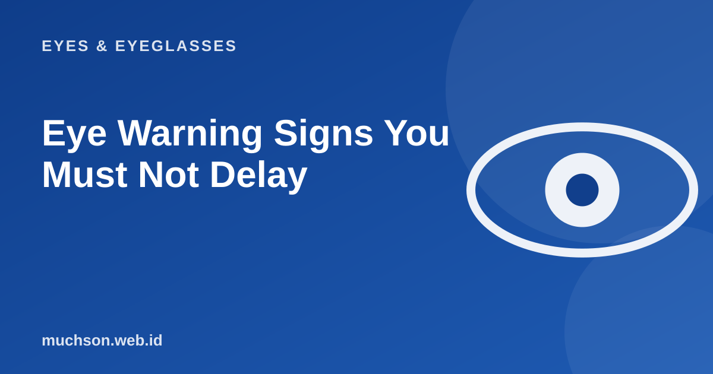

Some eye problems can wait for a normal appointment. Others cannot. Knowing the difference can save your sight. This article is not a substitute for an exam, but it helps you decide when to act fast.
By Muhammad Muchson Attoyibi··2 min read

Read this first
If you have a sign on the red list below, go to an eye doctor or the emergency unit straight away. Do not wait until tomorrow or look it up on the internet.
Signs that need an immediate check
Signs to have checked within a few days
A red eye with discharge that keeps coming back.
Persistent mild blurred vision.
Night vision difficulty that is getting worse.
The field of vision slowly narrowing (like looking through a tunnel).
Eyes that often water or sting for no clear reason.
What is often missed: diseases without symptoms
Some eye diseases develop slowly without pain, for example glaucoma in its early stage. Vision declines little by little and you do not notice. That is why regular eye checks matter, especially if you are over 40, have diabetes or hypertension, or have a family history of eye disease.
A closing message
This article is educational and not a diagnosis. If in doubt, it is better to be checked. Vision lost through delay often cannot be restored.
FAQ
Are floaters dangerous?
Mild floating spots or threads that have been there a long time and are stable are generally not dangerous. What to watch for is a sudden onset, a growing number, or flashes of light.
Should I see an eye doctor or is an optician enough?
An optician helps with glasses and lenses. Complaints that point to eye disease need an eye specialist.
What should I do after a chemical splash?
Rinse straight away with clean running water for several minutes, do not rub, then seek medical help.
Muhammad Muchson AttoyibiSoftware engineer and academic trainer based in Malang, Indonesia. Writes about technology, learning, and practical everyday topics. About me